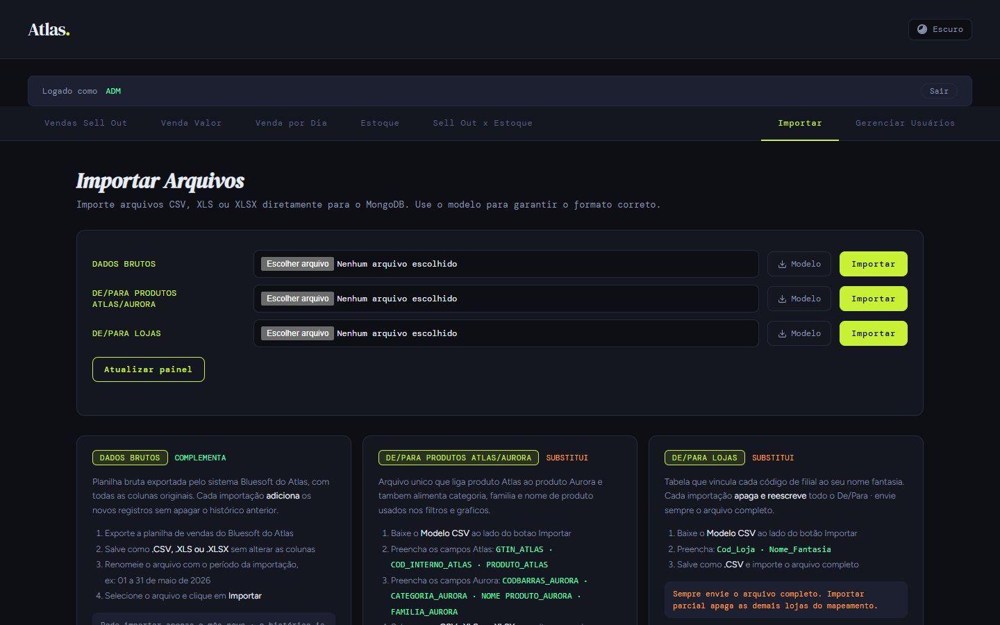
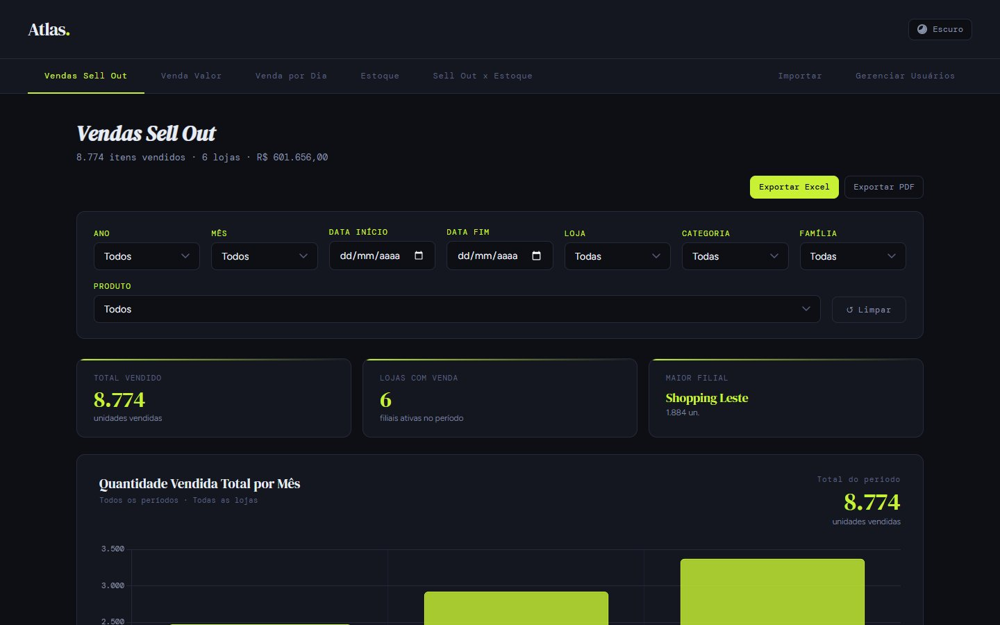
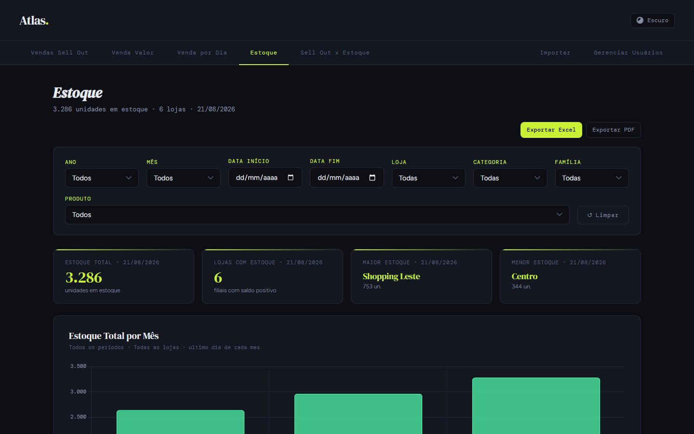
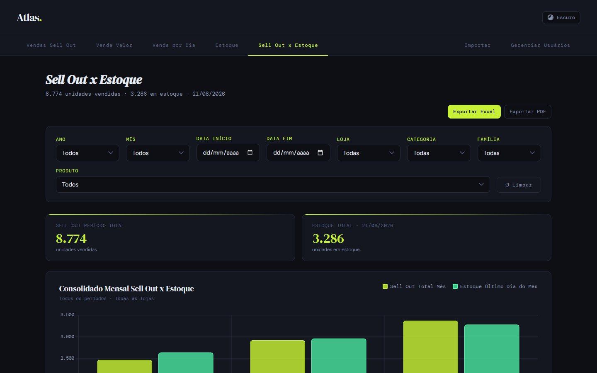
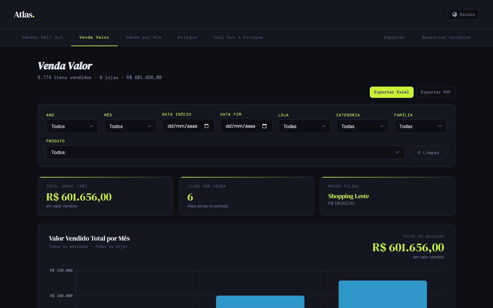

Um painel novo em dois dias.
Um segundo cliente varejista precisava do mesmo diagnóstico de sell out e estoque. A base técnica já existia; o desafio estava num detalhe que travava tudo: o sistema do cliente identifica cada produto com um código próprio, diferente do código da indústria. Sem traduzir esse código, nenhuma venda ganha categoria.

Mesmas perguntas, outro sistema, outros códigos.
A diretoria comercial queria para este cliente o que já tinha para o primeiro: venda em quantidade e valor, estoque e o cruzamento dos dois, por loja, categoria, família e produto. O cliente exporta os dados do seu sistema de varejo, e ali o produto não vem com o código de barras da indústria. Vem com o GTIN cadastrado pelo cliente ou com um código interno dele.
Sem a tradução do código, a venda existe, mas não tem categoria, família nem nome. O painel fica cheio de “sem classificação”.
A base do Painel Vitta, com as diferenças no lugar certo.
Em vez de começar do zero, o projeto partiu do Painel Vitta, já validado em produção. A regra foi clara: manter o que é arquitetura e adaptar só o que é particularidade do cliente.
Tudo o que é arquitetura
Campos pré-calculados na importação, cache com pré-aquecimento, desfazer por lote, histórico, usuários com papéis, reset de senha por e-mail e as 7 abas.
Três arquivos, um deles novo.
| Base | Colunas | Ao importar | Papel |
|---|---|---|---|
| Dados brutos | Data Loja GTIN/PLU Produto Venda (Qtd) Venda (R$) Estoque Diario | Complementa o histórico | Venda e estoque exportados do sistema do cliente |
| De/Para Produtos (novo) | GTIN_ATLAS COD_INTERNO_ATLAS PRODUTO_ATLAS → CODBARRAS CATEGORIA NOME PRODUTO FAMILIA COD SFA | Substitui o mapeamento | Ponte entre o código do cliente e o código da indústria, com a classificação do produto |
| De/Para Lojas | Cod_Loja Nome_Fantasia | Substitui o mapeamento | Nome de cada loja, usável antes mesmo dos dados brutos |
Um de-para intermediário, antes de qualquer consulta.
O de-para de produtos do cliente faz a tradução em duas chaves: primeiro pelo GTIN do cliente e, quando ele não existe, pelo código interno. O resultado alimenta automaticamente o de-para de categorias usado pelo painel, e cada linha de venda já entra com o produto correto.
Trocar o de-para sem derrubar o painel.
Aqui o de-para muda com frequência: chegam produtos novos, códigos corrigidos e mapeamentos refeitos. Cada troca reclassifica o histórico inteiro, e isso precisava acontecer sem travar quem estava usando o painel.
O trabalho pesado começa no navegador.
XLSX dividido no navegador
A planilha é lida e fatiada no próprio navegador antes de subir. Arquivos grandes chegam em partes, com barra de progresso, sem estourar o tempo do servidor.
Datas do Excel
As datas vindas do XLSX ganharam uma leitura própria e entram sempre no mesmo formato. Isso também corrigiu o filtro de ano pela data importada.
Modelo = última importação
O botão de modelo baixa a última versão importada de cada base, por stream, pronta para editar e reenviar.
Cada dado no seu grão
Venda diária e dado mensal são tratados separadamente, para o total de sell out bater no comparativo com o estoque.
As mesmas sete abas, com a classificação do cliente.
A interface herdou as abas do Painel Vitta (Vendas Sell Out, Venda Valor, Venda por Dia, Estoque, Sell Out × Estoque, Importar e Gerenciar Usuários), com filtros por ano, mês, período, loja, categoria, família e produto, e exportação para Excel e PDF.




Um mês do primeiro deploy à demonstração pública.
- Primeiro deployEstrutura do painel Atlas no ar.
- Réplica da base VittaPainel completo com as particularidades do cliente e a barra de progresso da importação.
- De-para resistenteImportação de XLSX em lotes no navegador, reclassificação sem bloquear o painel, desfazer sem timeout e cache invalidado a cada mudança.
- Modelos e arquivos originaisDownload da última importação como modelo, por stream, e o arquivo original guardado com cada lote.
- PrecisãoCódigo SFA preservado, dado diário separado do mensal, total de sell out corrigido no comparativo e filtro de ano pela data importada.
- Demonstração públicaVersão estática com API simulada no navegador, para portfólio.
A mesma família tem também o Painel Bella, com contagem manual de estoque.
Em produção no Koyeb; aqui, no navegador.
- HTML, CSS e JS puro
- lê e fatia o XLSX antes de enviar
- 50 rotas, cache em memória
- reclassificação em segundo plano
- login, papéis e reset por e-mail
- banco próprio do cliente
- dados brutos, de-paras e logs
Nesta demonstração não há servidor nem banco. Um módulo (mock-api.js) intercepta as chamadas do painel no navegador e responde com lojas, produtos e números inventados. O front-end é o mesmo da produção.
Tecnologias
Passe pela aba Importar e veja como cada base é explicada.
Depois, em Vendas Sell Out, filtre uma categoria e uma loja e compare com Sell Out × Estoque.